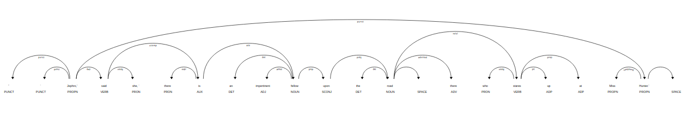

spaCy
spaCy is a natural language processing library for python. Some of its features are: - non-destructive tokenization, - named entity recognition, - pre-trained models - support for 52+ individual langueages.
Since coding is best explained through examples, in this blog, we will use spacy to work through a book from Project Gutenberg.
Finding proper nouns and custom patterns in The Adventures of Sherlock Holmes
Install spacy and language model
! pip install -U spacy
! python -m spacy download en_core_web_sm
Imports
import spacy
Load model as the nlp onject
spacy language and models can be downloaded as python packages. Some of the models and langugae packages can be found here. For this example, we will be using the small english languge web model 'en_core_web_sm'.
nlp = spacy.load('en_core_web_sm')
Load text
text = open('data/1661-0.txt').read()
The length of the text is more than the default max length, so we reassign the max length of text to reflect that.
nlp.max_length = len(text)
Process text
doc = nlp(text)
Find sentences in text
sentences = list(doc.sents)
we can access the sentences through a loop.
long_sentences = [sentence for sentence in sentences if len(sentence) > 100]
long_sentences[0]
A shock of orange hair, a
pale face disfigured by a horrible scar, which, by its contraction, has
turned up the outer edge of his upper lip, a bulldog chin, and a pair
of very penetrating dark eyes, which present a singular contrast to the
colour of his hair, all mark him out from amid the common crowd of
mendicants and so, too, does his wit, for he is ever ready with a reply
to any piece of chaff which may be thrown at him by the passers-by.
Tokenization, Lemmatization and labeling of named entities
When we call the nlp object on our text, it calls for a pipeline object that tokenizes, tags, parses and recognizes entities. We can access the tokens and entities through a loop, call for the lemmas of each word through .lemma_ and find labels for the entities through .label_

token_list = [token for token in doc]
token_list[1000:1010]
[problem, ., I, rang, the, bell, , and, was, shown]
lemma_list = [token.lemma_ for token in doc]
lemma_list[1000:1010]
['problem', '.', '-PRON-', 'ring', 'the', 'bell', '\n', 'and', 'be', 'show']
entity_list = []
label_list = []
for ent in doc.ents:
entity_list.append(ent)
label_list.append(ent.label_)
i = 0
while i < 10:
print(entity_list[i], ':', label_list[i])
i += 1
Gutenberg : PERSON
The Adventures of Sherlock Holmes : WORK_OF_ART
Arthur Conan Doyle
: ORG
the Project Gutenberg License : ORG
eBook : LAW
The Adventures of Sherlock Holmes
: WORK_OF_ART
Arthur Conan Doyle
Release Date : PERSON
November 29, 2002 : DATE
May 20, 2019 : DATE
English : LANGUAGE
As we can see, it's not perfect. Often times, for bigger text documents like this it is better to use larger models. 'en_core_web_sm' is a smaller model, as denoted by the 'sm' suffix.
Find all the proper nouns in the text
proper_noun_list = [token.text for token in doc if token.pos_ == 'PROPN']
print('Number of proper nouns in text:', len(proper_noun_list))
print('Example:', proper_noun_list[1537:1550])
Number of proper nouns in text: 5070
Example: ['Miss', 'Turner', 'James', 'Mr.', 'Holmes', 'Miss', 'Turner', 'God', 'Holmes', 'Lestrade', 'James', 'McCarthy', 'Holmes']
The proper nouns can also be accessed through loops.
Stop words
Stop words and punctuations can be targeted through is_stop and is_punct.
clean_doc = [token.text for token in doc if (not token.is_stop) and (not token.is_punct)]
clean_doc[0:10]
['\n',
'Project',
'Gutenberg',
'Adventures',
'Sherlock',
'Holmes',
'Arthur',
'Conan',
'Doyle',
'\n\n']
We can use our own stop_words or make a default stop_word not a stop_word with in the following process.
nlp.vocab["the"].is_stop = False
nlp.vocab["\n"].is_stop = True
clean_text = [token.text for token in doc if (not token.is_stop) and (not token.is_punct)]
clean_text[0:10]
['Project',
'Gutenberg',
'Adventures',
'Sherlock',
'Holmes',
'Arthur',
'Conan',
'Doyle',
'\n\n',
'eBook']
dependencies and visualization through displacy
# Print the text and the predicted part-of-speech tag
import pandas as pd
print('Sentence:',sentences[637])
sent_df = pd.DataFrame(columns = ['text', 'pos', 'dep', 'related word'])
text_list = []
pos_list = []
dep_list = []
rel_list = []
for word in sentences[637]:
text_list.append(word.text)
pos_list.append(word.pos_)
dep_list.append(word.dep_)
rel_list.append(word.head.text)
sent_df['text'] = text_list
sent_df['pos'] = pos_list
sent_df['dep'] = dep_list
sent_df['related word'] = rel_list
sent_df
Sentence: I wish she had been of my own station!
| text | pos | dep | related word | |
|---|---|---|---|---|
| 0 | I | PRON | nsubj | wish |
| 1 | wish | VERB | ROOT | wish |
| 2 | she | PRON | nsubj | been |
| 3 | had | AUX | aux | been |
| 4 | been | AUX | ccomp | wish |
| 5 | of | ADP | prep | been |
| 6 | my | PRON | poss | station |
| 7 | own | ADJ | amod | station |
| 8 | station | NOUN | pobj | of |
| 9 | ! | PUNCT | punct | wish |
| 10 | \n | SPACE | ! |
from spacy import displacy
displacy.render(sentences[6751], style = 'dep')
Here's what the visualizer would render for us. 
While the code block mentioned above is enough to render displacy in jupyter notebook, we need to use displacy.serve for other cases.
Matcher
So if we wanted to extract every word group that consisted of a noun following an adjective, how would we do that?
We can use Rule based matching to accomplish this.
sentences[6751]
“‘Jephro,’ said she, ‘there is an impertinent fellow upon the road
there who stares up at Miss Hunter.’
Import matcher.
from spacy.matcher import Matcher
Instantiate the matcher with shared vocab of the doc.
matcher = Matcher(nlp.vocab)
Create a custom pattern and add it to the matcher.
pattern = [{'POS': 'ADJ'},
{'POS': 'NOUN', 'OP': '+'}]
matcher.add('CUSTOM_PATTERN', None, pattern)
note: "OP" can have one of four values: - '!' for 0 times - '?' for 0 or 1 time - '+' for 1 or more times - '*' for 0 or more times
We can add pattern to the matcher as well thorugh matcher.add()
matches = matcher(doc)
len(matches)
3202
We can access the matched spans through loops.
match_list = [doc[start:end] for match_id, start, end in matches]
match_list[100:105]
[other purposes, private note, own seal, little problem, serious one]
There's a lot more we can do with spacy, it is really well documented and easy to pick up. So if you're looking to do some more NLP alongside what nltk has to offer, check out spacy!